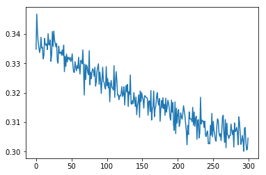
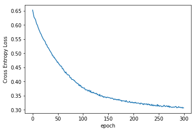

Pytorch for Deep Learning BootCamp¶
by Jawad Haider
05 - Neural Network Exercises¶
- Neural Network Exercises
- Census Income Dataset
- Perform standard imports
- 1. Separate continuous, categorical and label column names
- 2. Convert categorical columns to category dtypes
- Optional: Shuffle the dataset
- 3. Set the embedding sizes
- 4. Create an array of categorical values
- 5. Convert “cats” to a tensor
- 6. Create an array of continuous values
- 7. Convert “conts” to a tensor
- 8. Create a label tensor
- 9. Create train and test sets from cats, conts, and y
- Define the model class
- 10. Set the random seed
- 11. Create a TabularModel instance
- 12. Define the loss and optimization functions
- Train the model
- 13. Plot the Cross Entropy Loss against epochs
- 14. Evaluate the test set
- 15. Calculate the overall percent accuracy
- BONUS: Feed new data through the trained model
- Great job!
Neural Network Exercises¶
For these exercises we’ll perform a binary classification on the Census
Income dataset available from the
UC Irvine
Machine Learning Repository
The goal is to determine if an
individual earns more than $50K based on a set of continuous and
categorical variables.
otherwise you will end up writing over the example output!
Census Income Dataset¶
For this exercises we’re using the Census Income dataset available from the UC Irvine Machine Learning Repository.
The full dataset has 48,842 entries. For this exercise we have reduced the number of records, fields and field entries, and have removed entries with null values. The file income.csv has 30,000 entries
Each entry contains the following information about an individual: * age: the age of an individual as an integer from 18 to 90 (continuous) * sex: Male or Female (categorical) * education: represents the highest level of education achieved by an individual (categorical) * education_num: represents education as an integer from 3 to 16 (categorical)
| 3 | 5th-6th | 8 | 12th | 13 | Bachelors |
| 4 | 7th-8th | 9 | HS-grad | 14 | Masters |
| 5 | 9th | 10 | Some-college | 15 | Prof-school |
| 6 | 10th | 11 | Assoc-voc | 16 | Doctorate |
| 7 | 11th | 12 | Assoc-acdm |
-
marital-status: marital status of an individual (categorical)
Married Divorced Married-spouse-absent Separated Widowed Never-married -
workclass: a general term to represent the employment status of an individual (categorical)
Local-gov Private State-gov Self-emp Federal-gov -
occupation: the general type of occupation of an individual (categorical)
Adm-clerical Handlers-cleaners Protective-serv Craft-repair Machine-op-inspct Sales Exec-managerial Other-service Tech-support Farming-fishing Prof-specialty Transport-moving -
hours-per-week: the hours an individual has reported to work per week as an integer from 20 to 90 (continuous)
- income: whether or not an individual makes more than \$50,000 annually (label)
- label: income represented as an integer (0: \<=\$50K, 1: >\$50K) (optional label)
Perform standard imports¶
Run the cell below to load the libraries needed for this exercise and the Census Income dataset.
import torch
import torch.nn as nn
import numpy as np
import pandas as pd
import matplotlib.pyplot as plt
from sklearn.utils import shuffle
%matplotlib inline
df = pd.read_csv('../Data/income.csv')
30000
| age | sex | education | education-num | marital-status | workclass | occupation | hours-per-week | income | label | |
|---|---|---|---|---|---|---|---|---|---|---|
| 0 | 27 | Male | HS-grad | 9 | Never-married | Private | Craft-repair | 40 | <=50K | 0 |
| 1 | 47 | Male | Masters | 14 | Married | Local-gov | Exec-managerial | 50 | >50K | 1 |
| 2 | 59 | Male | HS-grad | 9 | Divorced | Self-emp | Prof-specialty | 20 | <=50K | 0 |
| 3 | 38 | Female | Prof-school | 15 | Never-married | Federal-gov | Prof-specialty | 57 | >50K | 1 |
| 4 | 64 | Female | 11th | 7 | Widowed | Private | Farming-fishing | 40 | <=50K | 0 |
0 21700
1 8300
Name: label, dtype: int64
<class 'pandas.core.frame.DataFrame'>
RangeIndex: 30000 entries, 0 to 29999
Data columns (total 10 columns):
age 30000 non-null int64
sex 30000 non-null object
education 30000 non-null object
education-num 30000 non-null int64
marital-status 30000 non-null object
workclass 30000 non-null object
occupation 30000 non-null object
hours-per-week 30000 non-null int64
income 30000 non-null object
label 30000 non-null int64
dtypes: int64(4), object(6)
memory usage: 2.3+ MB
1. Separate continuous, categorical and label column names¶
You should find that there are 5 categorical columns, 2 continuous
columns and 1 label.
In the case of education and
education-num it doesn’t matter which column you use. For the
label column, be sure to use label and not income.
Assign the variable names “cat_cols”, “cont_cols” and “y_col” to the
lists of names.
Index(['age', 'sex', 'education', 'education-num', 'marital-status',
'workclass', 'occupation', 'hours-per-week', 'income', 'label'],
dtype='object')
# CODE HERE
cat_cols=['sex', 'education','marital-status','workclass', 'occupation']
cont_cols=['hours-per-week','education-num']
y_col=['label']
# RUN THIS CODE TO COMPARE RESULTS:
print(f'cat_cols has {len(cat_cols)} columns')
print(f'cont_cols has {len(cont_cols)} columns')
print(f'y_col has {len(y_col)} column')
cat_cols has 5 columns
cont_cols has 2 columns
y_col has 1 column
cat_cols has 5 columns
cont_cols has 2 columns
y_col has 1 column
2. Convert categorical columns to category dtypes¶
<class 'pandas.core.frame.DataFrame'>
RangeIndex: 30000 entries, 0 to 29999
Data columns (total 10 columns):
age 30000 non-null int64
sex 30000 non-null category
education 30000 non-null category
education-num 30000 non-null int64
marital-status 30000 non-null category
workclass 30000 non-null category
occupation 30000 non-null category
hours-per-week 30000 non-null int64
income 30000 non-null object
label 30000 non-null int64
dtypes: category(5), int64(4), object(1)
memory usage: 1.3+ MB
Optional: Shuffle the dataset¶
The income.csv dataset is already shuffled. However, if you would like to try different configurations after completing the exercises, this is where you would want to shuffle the entire set.
# THIS CELL IS OPTIONAL
df = shuffle(df, random_state=101)
df.reset_index(drop=True, inplace=True)
df.head()
| age | sex | education | education-num | marital-status | workclass | occupation | hours-per-week | income | label | |
|---|---|---|---|---|---|---|---|---|---|---|
| 0 | 23 | Female | HS-grad | 9 | Never-married | Private | Other-service | 50 | <=50K | 0 |
| 1 | 37 | Female | Prof-school | 15 | Married | State-gov | Prof-specialty | 39 | >50K | 1 |
| 2 | 34 | Male | Some-college | 10 | Divorced | Private | Adm-clerical | 40 | <=50K | 0 |
| 3 | 31 | Male | HS-grad | 9 | Married | Private | Craft-repair | 40 | >50K | 1 |
| 4 | 20 | Female | Some-college | 10 | Never-married | Private | Sales | 25 | <=50K | 0 |
3. Set the embedding sizes¶
Create a variable “cat_szs” to hold the number of categories in each
variable.
Then create a variable “emb_szs” to hold the list of
(category size, embedding size) tuples.
# CODE HERE
cat_szs = [len(df[cat].cat.categories) for cat in cat_cols]
emb_szs = [(size, min(50,(size+1)//2)) for size in cat_szs]
emb_szs
[(2, 1), (14, 7), (6, 3), (5, 3), (12, 6)]
[(2, 1), (14, 7), (6, 3), (5, 3), (12, 6)]
4. Create an array of categorical values¶
Create a NumPy array called “cats” that contains a stack of each
categorical column .cat.codes.values
Note: your output may
contain different values. Ours came after performing the shuffle step
shown above.
# CODE HERE
cats = np.stack([df[cat].cat.codes.values for cat in cat_cols], axis=1)
# RUN THIS CODE TO COMPARE RESULTS
cats[:5]
array([[ 0, 10, 3, 2, 6],
[ 0, 12, 1, 4, 7],
[ 1, 13, 0, 2, 0],
[ 1, 10, 1, 2, 1],
[ 0, 13, 3, 2, 9]], dtype=int8)
array([[ 1, 10, 3, 2, 1],
[ 1, 11, 1, 1, 2],
[ 1, 10, 0, 3, 7],
[ 0, 12, 3, 0, 7],
[ 0, 1, 5, 2, 3]], dtype=int8)
5. Convert “cats” to a tensor¶
Convert the “cats” NumPy array to a tensor of dtype int64
/home/jawad/anaconda3/envs/pytorchenv/lib/python3.7/site-packages/ipykernel_launcher.py:2: UserWarning: To copy construct from a tensor, it is recommended to use sourceTensor.clone().detach() or sourceTensor.clone().detach().requires_grad_(True), rather than torch.tensor(sourceTensor).
torch.int64
6. Create an array of continuous values¶
Create a NumPy array called “conts” that contains a stack of each
continuous column.
Note: your output may contain different values.
Ours came after performing the shuffle step shown above.
# CODE HERE
conts = np.stack([df[cont].values for cont in cont_cols], axis=1)
# RUN THIS CODE TO COMPARE RESULTS
conts[:5]
array([[50, 9],
[39, 15],
[40, 10],
[40, 9],
[25, 10]])
array([[27, 40],
[47, 50],
[59, 20],
[38, 57],
[64, 40]], dtype=int64)
7. Convert “conts” to a tensor¶
Convert the “conts” NumPy array to a tensor of dtype float32
# CODE HERE
conts = torch.tensor(conts, dtype=torch.float)
# RUN THIS CODE TO COMPARE RESULTS
conts.dtype
torch.float32
torch.float32
8. Create a label tensor¶
Create a tensor called “y” from the values in the label column. Be sure to flatten the tensor so that it can be passed into the CE Loss function.
9. Create train and test sets from cats, conts, and y¶
We use the entire batch of 30,000 records, but a smaller batch size will
save time during training.
We used a test size of 5,000 records, but
you can choose another fixed value or a percentage of the batch
size.
Make sure that your test records remain separate from your
training records, without overlap.
To make coding slices easier, we
recommend assigning batch and test sizes to simple variables like “b”
and “t”.
# CODE HERE
b = 10000 # suggested batch size
t = 2000 # suggested test size
cat_train = cats[:b-t]
cat_test=cats[b-t:b]
cont_train = conts[:b-t]
cont_test = conts[b-t:b]
y_train= y[:b-t]
y_test=y[b-t:b]
Define the model class¶
Run the cell below to define the TabularModel model class we’ve used before.
class TabularModel(nn.Module):
def __init__(self, emb_szs, n_cont, out_sz, layers, p=0.5):
# Call the parent __init__
super().__init__()
# Set up the embedding, dropout, and batch normalization layer attributes
self.embeds = nn.ModuleList([nn.Embedding(ni, nf) for ni,nf in emb_szs])
self.emb_drop = nn.Dropout(p)
self.bn_cont = nn.BatchNorm1d(n_cont)
# Assign a variable to hold a list of layers
layerlist = []
# Assign a variable to store the number of embedding and continuous layers
n_emb = sum((nf for ni,nf in emb_szs))
n_in = n_emb + n_cont
# Iterate through the passed-in "layers" parameter (ie, [200,100]) to build a list of layers
for i in layers:
layerlist.append(nn.Linear(n_in,i))
layerlist.append(nn.ReLU(inplace=True))
layerlist.append(nn.BatchNorm1d(i))
layerlist.append(nn.Dropout(p))
n_in = i
layerlist.append(nn.Linear(layers[-1],out_sz))
# Convert the list of layers into an attribute
self.layers = nn.Sequential(*layerlist)
def forward(self, x_cat, x_cont):
# Extract embedding values from the incoming categorical data
embeddings = []
for i,e in enumerate(self.embeds):
embeddings.append(e(x_cat[:,i]))
x = torch.cat(embeddings, 1)
# Perform an initial dropout on the embeddings
x = self.emb_drop(x)
# Normalize the incoming continuous data
x_cont = self.bn_cont(x_cont)
x = torch.cat([x, x_cont], 1)
# Set up model layers
x = self.layers(x)
return x
10. Set the random seed¶
To obtain results that can be recreated, set a torch manual_seed (we used 33).
<torch._C.Generator at 0x7f2830066510>
<torch._C.Generator at 0x1e5e64e5e30>
11. Create a TabularModel instance¶
Create an instance called “model” with one hidden layer containing 50 neurons and a dropout layer p-value of 0.4
# CODE HERE
model = TabularModel(emb_szs,conts.shape[1], 2, [50],0.4)
# RUN THIS CODE TO COMPARE RESULTS
model
TabularModel(
(embeds): ModuleList(
(0): Embedding(2, 1)
(1): Embedding(14, 7)
(2): Embedding(6, 3)
(3): Embedding(5, 3)
(4): Embedding(12, 6)
)
(emb_drop): Dropout(p=0.4)
(bn_cont): BatchNorm1d(2, eps=1e-05, momentum=0.1, affine=True, track_running_stats=True)
(layers): Sequential(
(0): Linear(in_features=22, out_features=50, bias=True)
(1): ReLU(inplace)
(2): BatchNorm1d(50, eps=1e-05, momentum=0.1, affine=True, track_running_stats=True)
(3): Dropout(p=0.4)
(4): Linear(in_features=50, out_features=2, bias=True)
)
)
TabularModel(
(embeds): ModuleList(
(0): Embedding(2, 1)
(1): Embedding(14, 7)
(2): Embedding(6, 3)
(3): Embedding(5, 3)
(4): Embedding(12, 6)
)
(emb_drop): Dropout(p=0.4)
(bn_cont): BatchNorm1d(2, eps=1e-05, momentum=0.1, affine=True, track_running_stats=True)
(layers): Sequential(
(0): Linear(in_features=22, out_features=50, bias=True)
(1): ReLU(inplace)
(2): BatchNorm1d(50, eps=1e-05, momentum=0.1, affine=True, track_running_stats=True)
(3): Dropout(p=0.4)
(4): Linear(in_features=50, out_features=2, bias=True)
)
)
12. Define the loss and optimization functions¶
Create a loss function called “criterion” using CrossEntropyLoss
Create an optimization function called “optimizer” using Adam, with a
learning rate of 0.001
# CODE HERE
criterion = nn.CrossEntropyLoss()
optimizer=torch.optim.Adam(model.parameters(),lr=0.001)
Train the model¶
Run the cell below to train the model through 300 epochs. Remember,
results may vary!
After completing the exercises, feel free to come
back to this section and experiment with different parameters.
import time
start_time = time.time()
epochs = 300
losses = []
for i in range(epochs):
i+=1
y_pred = model(cat_train, cont_train)
loss = criterion(y_pred, y_train)
losses.append(loss)
# a neat trick to save screen space:
if i%25 == 1:
print(f'epoch: {i:3} loss: {loss.item():10.8f}')
optimizer.zero_grad()
loss.backward()
optimizer.step()
print(f'epoch: {i:3} loss: {loss.item():10.8f}') # print the last line
print(f'\nDuration: {time.time() - start_time:.0f} seconds') # print the time elapsed
epoch: 1 loss: 0.33478802
epoch: 26 loss: 0.34096697
epoch: 51 loss: 0.33127704
epoch: 76 loss: 0.33429772
epoch: 101 loss: 0.32238889
epoch: 126 loss: 0.31584346
epoch: 151 loss: 0.31843153
epoch: 176 loss: 0.31027427
epoch: 201 loss: 0.31265819
epoch: 226 loss: 0.31138414
epoch: 251 loss: 0.31025240
epoch: 276 loss: 0.30936244
epoch: 300 loss: 0.30457661
Duration: 26 seconds
13. Plot the Cross Entropy Loss against epochs¶
Results may vary. The shape of the plot is what matters.


14. Evaluate the test set¶
With torch set to no_grad, pass cat_test and con_test through the trained model. Create a validation set called “y_val”. Compare the output to y_test using the loss function defined above. Results may vary.
# CODE HERE
with torch.no_grad():
y_val=model(cat_test, cont_test)
loss = criterion(y_val,y_test)
# RUN THIS CODE TO COMPARE RESULTS
print(f'CE Loss: {loss:.8f}')
CE Loss: 0.31630206
CE Loss: 0.30774996
15. Calculate the overall percent accuracy¶
Using a for loop, compare the argmax values of the y_val validation set to the y_test set.
# CODE HERE
correct=0
for i in range(2000):
if(y_val[i].argmax()==y_test[i].argmax()):
correct+=1
print(f"{correct} out of {2000} = {(correct/2000)*100:.2f} % correct")
1394 out of 2000 = 69.70 % correct
4255 out of 5000 = 85.10% correct
BONUS: Feed new data through the trained model¶
See if you can write a function that allows a user to input their own
values, and generates a prediction.
HINT:
There’s no need to build a DataFrame. You can
use inputs to populate column variables, convert them to embeddings with
a context dictionary, and pass the embedded values directly into the
tensor constructors:
mar = input("What is the person's marital status? ")
mar_d = dict(Divorced=0, Married=1, Married-spouse-absent=2, Never-married=3, Separated=4, Widowed=5)
mar = mar_d[mar]
cats = torch.tensor([..., ..., mar, ..., ...], dtype=torch.int64).reshape(1,-1)
Make sure that names are put in alphabetical order before assigning numbers.
Also, be sure to run model.eval() before passing new date through. Good luck!
What is the person's age? (18-90) 22
What is the person's sex? (Male/Female) male
What is the person's education level? (3-16) 12
What is the person's marital status? married
What is the person's workclass? private
What is the person's occupation? sales
How many hours/week are worked? (20-90) 40
The predicted label is 0